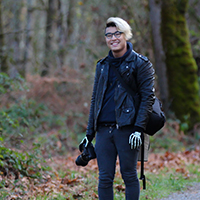

Hi, I'm Allen!
Nice to meet you. Here's a little bit about me:
My creative roots were planted at an early age in music. I was trained classically on the piano and violin, and later studied viola under the likes of Melia Watras and Arie Schächter. I have played with the Seattle Youth Symphony Orchestra and was a finalist in the Washington State Solo & Ensamble Contest. My creative appetite continuted to expand, and after picking up the guitar, bass, and drums, I record my first EP, As Headaway Ahem. After graduating from the University of Washington with a Bachelors in Chemical Engineering (lol, seriously?!), I produced the Theotech Podcast and had a quick run on YouTube before taking on photography.
My photographic forte lies with events. From parties to corporate gatherings, my goal is to capture the energy and essence of a group. There is something magical when people come together to learn, laugh, love and celebrate life. I have worked with restaurants, fitness instructors, promoters, and various organizations to creatively express their brand and business. In addition to event photography, I equally enjoy opportunities to capture the outdoors, portraits, and products.
Outside of photography, the fun never stops! I am working my into the land of videography and managing social media accounts for small businesses. I am currently obsessed with photobooks, in the works to develop a webseries on art and creativity, and trying to find time to write a book. You can catch me doing all sorts of PNW activities, like hiking, cycling, skiing in the winter, running in the rain, and drinking craft beer at a local show. Catch me on my Instagram, and let's find some time to hangout!